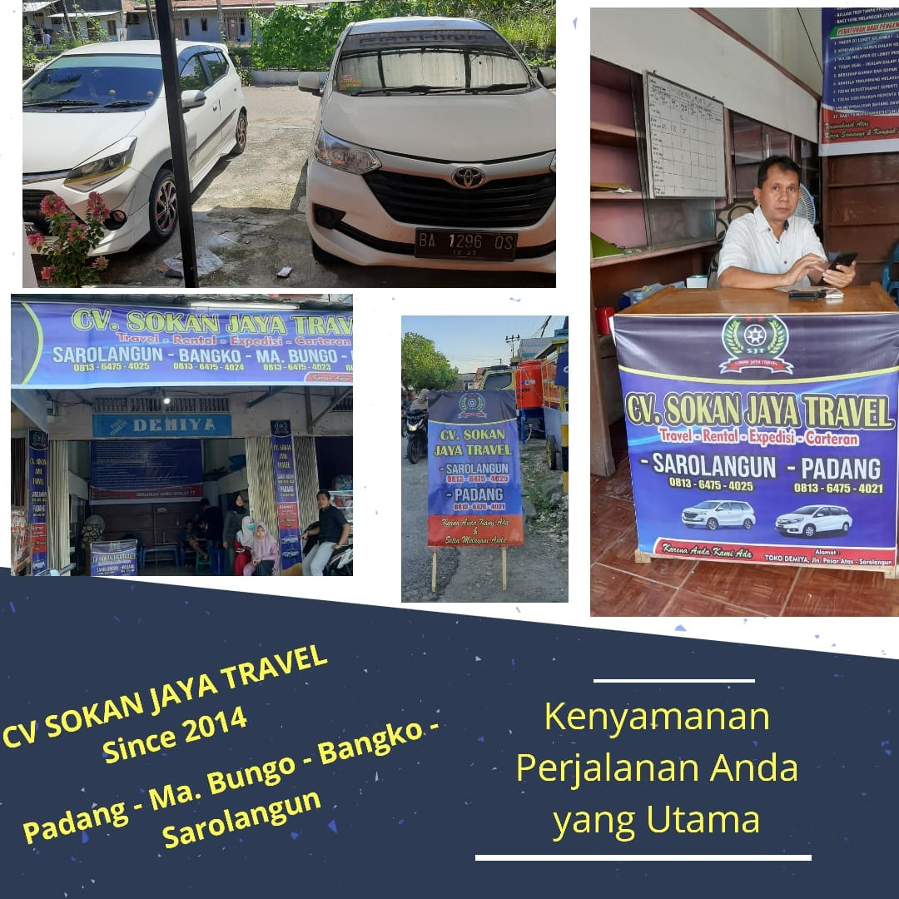

Tentang kami
Seven Brother

Cabang pusat dan awal Sokan Jaya Travel

Nagari Gantung ciri asal dari Seven Brother dan Huller milik Sokan jaya gorup

Produksi dari Beras sokan jaya group
Asal mula sokan jaya group
Sokan jaya group lahir dan berdiri sejak tahun 2014 yang mana nama ini di usulkan dari seven brother atau 7 bersaudara dari Nagari kecil yang terletak di kabupaten solok, tepatnya di sumatera barat.
Bisnis pertama dari sokan jaya group adalah cv.sokan jaya travel yang bergerak dalam perjalanan dan wisata antar provinsi sumatera barat dan provinsi jambi yang mana meliputi Kota Padang, Muaro Bungo , Bangko dan terakhir Sarolangun. Seiring berjalannya waktu sokan jaya group berkembang menjadi supplier beras solok dan sampai berhasil memilik huller atau tempat penggilingan padi pribadi yang sampai sekarang beras sokan jaya telah tersebar di beberapa swalayan dan mall seperti transmart di daerah Sumatera barat dan Juga di provinsi Jambi.